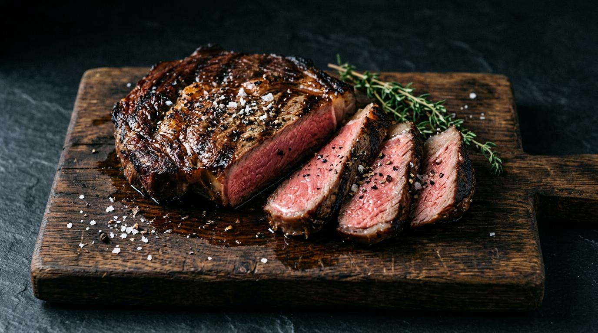

Safe temperatures for air-fryer cooking
Do you need a meat thermometer with an air fryer? The safe temperatures that matter
Air fryers brown the outside fast, which is exactly why colour is a poor guide to the inside. The official safe minimum temperatures, and how to check them.

Why colour is not enough
Fast, hot air crisps the surface quickly. That is the point of an air fryer - and it is why a golden outside tells you little about the middle. FoodSafety.gov's advice is direct: 'Always use a food thermometer to check whether meat has reached a safe minimum internal temperature' foodsafety.gov.
The numbers, from the official chart
| Food | Safe minimum internal temperature | Source |
|---|---|---|
| Chicken, turkey and other poultry (whole, breasts, legs, thighs, wings, ground) | 165 °F (74 °C) | foodsafety.gov |
| Beef, bison, veal, goat and lamb - steaks, roasts, chops | 145 °F (63 °C), then rest 3 minutes | foodsafety.gov |
| Ground meat and sausage (beef, pork and similar) | 160 °F (71 °C) | foodsafety.gov |
| Pork - steaks, roasts, chops | 145 °F (63 °C), then rest 3 minutes | foodsafety.gov |
| Fish (whole or fillet) | 145 °F (63 °C), or until flesh is no longer translucent and separates easily with a fork | foodsafety.gov |
| Leftovers (any type) | 165 °F (74 °C) | foodsafety.gov |
Copied from the official chart, not paraphrased. Wings, nuggets and reheated leftovers - air-fryer staples - all sit at 165 °F.
How to check in an air fryer
Pause the cook, pull the basket, and insert the probe into the thickest part of the largest piece, away from bone. With an instant-read probe such as the ThermoMaven Instant-Read you get a reading in 1 second amazon.com and slide the basket back. With a leave-in system such as the CHEF iQ Sense, the probe stays in and the app tells you when you are there.
So, do you need one?
If you cook meat, poultry or fish in an air fryer, the official guidance says to check with a thermometer. Which kind is a matter of how you cook - our instant-read vs wireless guide walks through it.
Questions buyers ask
What temperature should air-fried chicken reach?
165 °F (74 °C) for all poultry, per the FoodSafety.gov safe minimum internal temperature chart.
Do steaks need to rest?
The FoodSafety.gov chart lists a 3-minute rest time for beef, bison, veal, goat and lamb steaks, roasts and chops after reaching 145 °F.
The products in this guide
Best everyday thermometer
ThermoMaven · Meat thermometers
ThermoMaven Instant-Read
Dip it, read it, done - in about a second
- Reading1 secamazon.com
- Accuracy±0.5 °Famazon.com
- Power1 AAAamazon.com
Best for roasts and long cooks
CHEF iQ · Meat thermometers
CHEF iQ Sense
Leave three probes in and watch from your phone
- Probes3amazon.com
- Heat-safe1000 °Famazon.com
- ConnectivityWiFi + Bluetoothamazon.com
Keep reading
- Basket or oven-style?Basket or oven-style air fryer: what should you compare?A basket air fryer and a French-door air fryer oven do the same job in very different shapes. Here are the four comparisons that actually decide it - and the one people forget.
- Capacity checklistA no-hype checklist for comparing air fryer capacityQuarts on a box are a starting point, not an answer. Six checks that turn a capacity number into 'will my dinner fit?'.
- Cleanup and counter spaceHow to assess cleanup and counter-space trade-offsThe appliance you use is the one that is easy to clean and easy to leave out. A practical way to judge both before you buy.